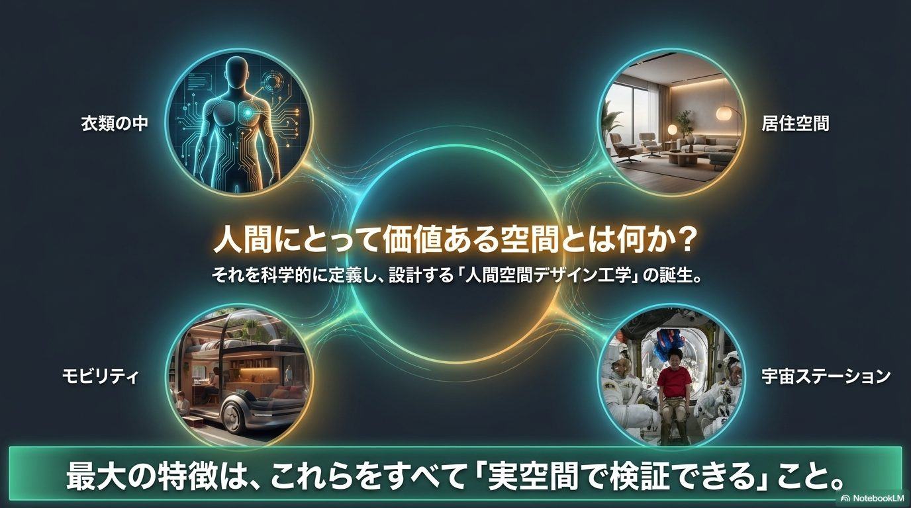
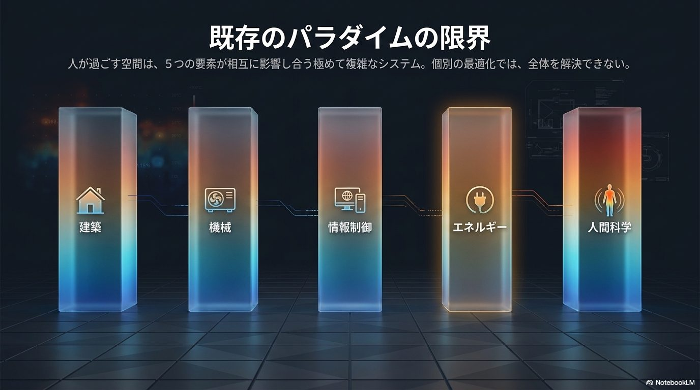
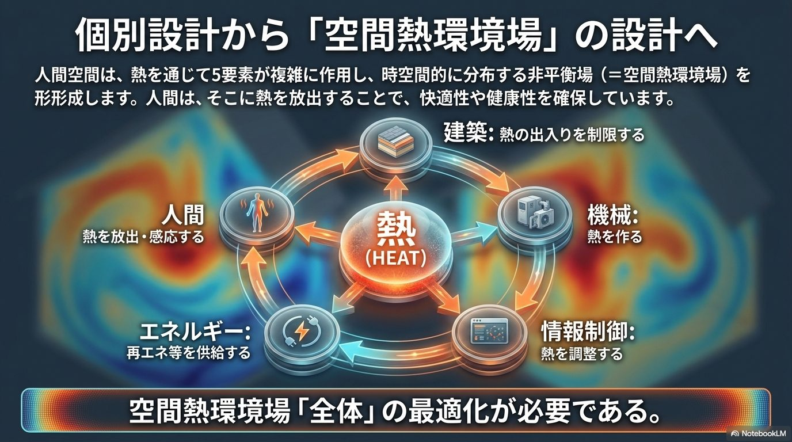
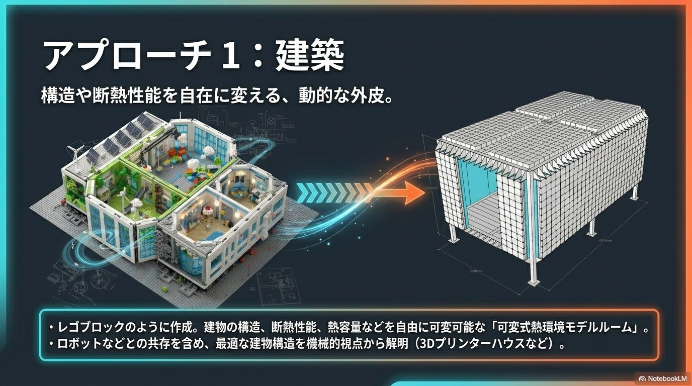
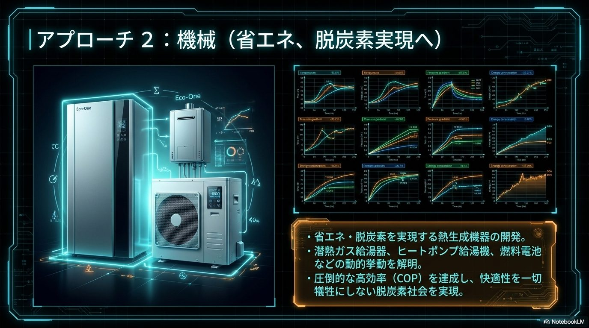
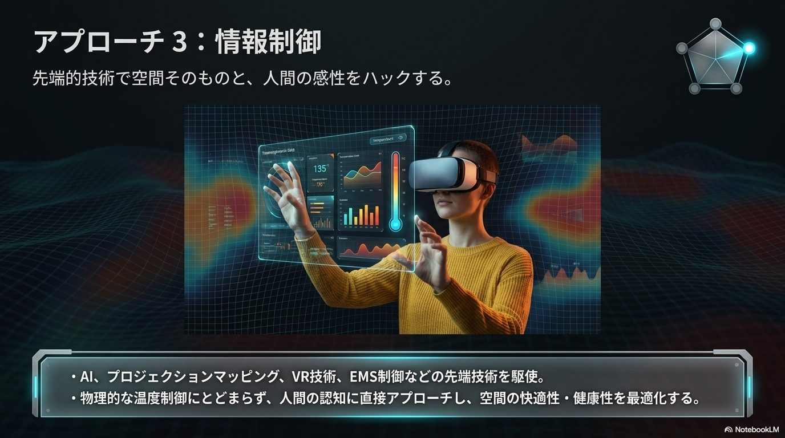
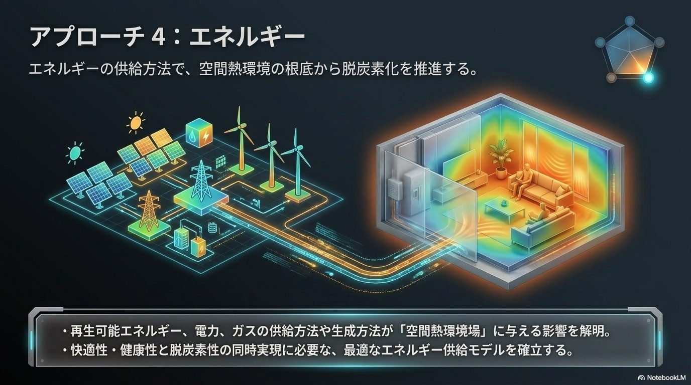
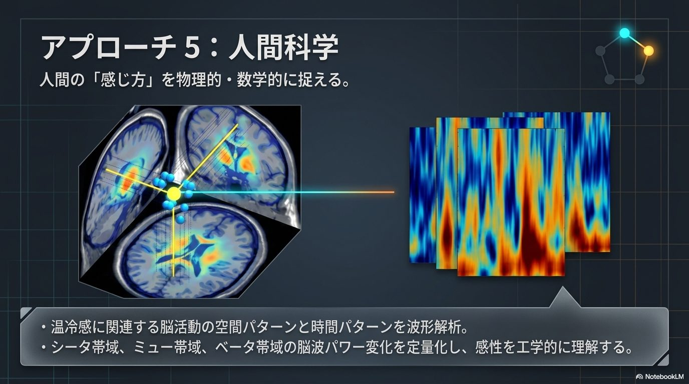

Our research develops along two complementary axes: the "macro" optimization of space as an integrated system (Human Space Design Engineering), and the "micro" elucidation of physical phenomena and development of foundational technologies that underpin that system (fundamental research).
From the space inside clothing to the space station. We define and study "human space" as any scale of space designed for people to occupy comfortably.

Inside clothing, living space, mobility, and the space station. Though the scales differ, all are "human spaces" in which people seek comfort.

Architecture, mechanical engineering, information and control, energy, and human science. Human space is realized only where these five academic fields overlap.

We treat the flow of heat surrounding a person as a single unified "field," forming the foundation for space design that achieves both comfort and energy efficiency.
We connect five academic fields that have traditionally been treated separately through the common language of "heat," creating new value in space design. Each theme is organized consistently as "Purpose → Method → What Students Do → Deliverables."





Envisioning a grand system alone cannot bring it into society. We are also vigorously pursuing fundamental research that confronts the extremes of heat and fluid behavior, and developing the elemental technologies that will command the energy of the future.
We build next-generation systems that make full use of both heat and electricity by harnessing "hydrogen," the trump card for a decarbonized society.
We build intelligent heat pump systems that operate in coordination with society's power supply-and-demand balance (demand response), delivering energy savings while maintaining comfort.
We build design theory that pushes the heat exchanger — the component that governs the performance of every thermal device — to the limits of efficiency and compactness.
We elucidate the complex phase-change mechanisms of "frost," which significantly degrades equipment performance in cold conditions, in order to predict and suppress frost formation.
We manage the supply, use, and storage of heat in an integrated manner to optimize energy use. Based on demand forecasts and the variability of renewable energy, we coordinate the control of multiple devices. We achieve energy savings and decarbonization while maintaining comfort.
We control not only temperature but also humidity appropriately, realizing a comfortable and healthy indoor environment. By integrating dehumidification/humidification equipment, ventilation, and air conditioning, we clarify the optimal system configuration. We build design methods that achieve high humidity-control performance while minimizing energy consumption.
Changes in surface tension caused by differences in temperature or concentration give rise to fluid convection. Through experiments and numerical analysis, we elucidate the mechanisms of complex flow and heat/mass transfer. We build fundamental knowledge that leads to higher performance in refrigeration and air-conditioning equipment.
Heat pump performance changes moment by moment with startup, shutdown, and load fluctuations. Through experiments and model analysis, we clarify the transient behavior of the refrigerant, compressor, and heat exchanger. We build design guidelines that lead to higher efficiency and more advanced control under actual operating conditions.